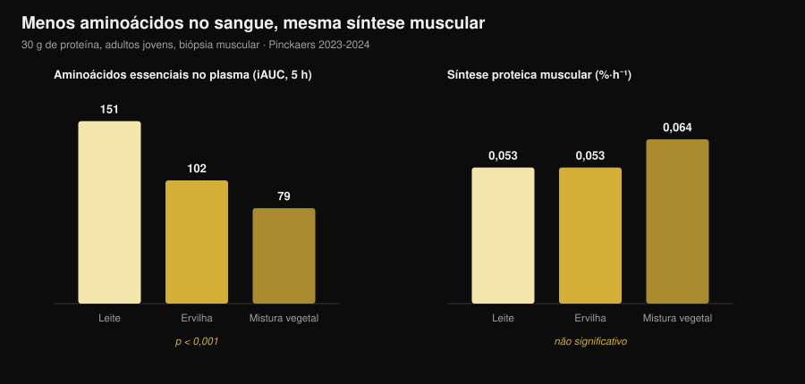
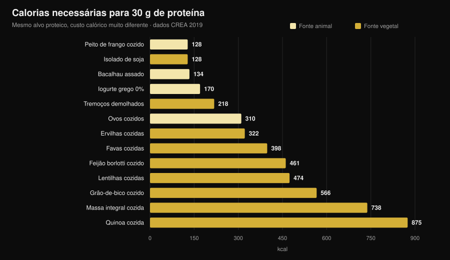

Proteína vegetal ou animal para os músculos?
"A proteína vegetal é incompleta, não constrói músculo." É uma das frases mais repetidas em qualquer ginásio, e o mecanismo por trás parece sólido: menos leucina, menos síntese proteica. Depois alguém foi medir a sério, com biópsias musculares, e o resultado não é o que esperas. Mas há um segundo número que quase ninguém põe na mesa, e é aí que a escolha se torna concreta.

Em resumo
- Cinco ensaios com biópsia muscular, cinco empates. Trinta gramas de proteína de ervilha, trigo, milho, batata ou de uma mistura vegetal produzem a mesma síntese proteica muscular que 30 g de proteína do leite (grupo de Maastricht, 2021-2024).
- O mecanismo "é preciso mais leucina" não resiste à medição. Com a mistura vegetal os aminoácidos essenciais no sangue são quase metade (iAUC 79 contra 151) e a síntese é idêntica.
- A longo prazo, o mesmo. Quatro ensaios de 10 a 16 semanas em veganos, mulheres vegetarianas e com misturas vegetais não encontram diferenças em massa, espessura muscular ou força.
- A maior meta-análise vê uma pequena vantagem animal (DMP −0,20 na massa), mas vinda de fontes vegetais que não a soja e de dietas inteiramente vegetais, não da comparação soja/leite.
- O custo real são as calorias. Para 30 g de proteína são precisos 99 g de peito de frango e 128 kcal, ou 435 g de lentilhas cozidas e 474 kcal (tabelas CREA). Quase quatro vezes mais.
De onde vem a dúvida
A proteína não é um bloco único: é uma cadeia de aminoácidos, nove dos quais o corpo não sabe fabricar (os essenciais). Um deles, a leucina, funciona como interruptor: acima de certa concentração no sangue liga a maquinaria que constrói proteína muscular.
As fontes vegetais têm, em média, menos leucina e menos aminoácidos essenciais por grama do que carne, ovos, peixe e laticínios, e várias são digeridas um pouco pior. Daí a conclusão lógica: menos leucina → menos síntese → menos músculo.
O raciocínio está certo. O problema é que um raciocínio certo não é um resultado: tem de ser medido.
A experiência que mede mesmo
Entre 2021 e 2024 o grupo de Luc van Loon, na Universidade de Maastricht, publicou cinco ensaios aleatorizados em dupla ocultação com o mesmo desenho: adultos jovens, infusão de fenilalanina marcada, biópsias musculares repetidas durante 5 horas, 30 g de proteína vegetal contra 30 g de proteína do leite.
| Proteína vegetal testada | Síntese vegetal | Leite | Resultado |
|---|---|---|---|
| Trigo (Pinckaers 2021) | 0,056 %·h⁻¹ | 0,053 %·h⁻¹ | p = 0,56 |
| Batata (Pinckaers 2022) | 0,053 %·h⁻¹ | 0,050 %·h⁻¹ | p = 0,54 |
| Mistura trigo+milho+ervilha (Pinckaers 2023) | 0,064 %·h⁻¹ | 0,053 %·h⁻¹ | p = 0,08 |
| Ervilha (Pinckaers 2024) | 0,053 %·h⁻¹ | 0,053 %·h⁻¹ | p = 0,96 |
| Milho (Pinckaers 2024) | 0,053 %·h⁻¹ | 0,053 %·h⁻¹ | p = 0,90 |
Cinco fontes vegetais diferentes, cinco empates. E no estudo da batata a medição foi feita também depois de um treino de pesos: 0,069 contra 0,064 %·h⁻¹ a favor da batata, p = 0,52. Mesmo na condição que interessa a quem treina, nenhuma diferença.

O gráfico mostra o dado que desmonta o mecanismo. Os aminoácidos essenciais que chegam ao sangue nas 5 horas seguintes (iAUC) são 151 mmol·300 min·L⁻¹ com leite, 102 com ervilha e 79 com a mistura vegetal: uma diferença enorme e muito sólida (p < 0,001 em ambas as comparações). A síntese muscular, essa, não se mexe.
Traduzindo: com 30 gramas de proteína, o limiar já está ultrapassado em todos os casos. O "pico de leucina" conta quando a dose é pequena; numa porção real deixa de decidir.
E ao longo dos meses?
A síntese medida em 5 horas é um indício, não um resultado. O músculo vê-se em meses. Aqui há quatro ensaios, e convém lê-los em conjunto.
Veganos contra omnívoros, 12 semanas (Hevia-Larraín 2021, Sports Medicine). Dezanove veganos habituais e 19 omnívoros, proteína levada a 1,6 g por kg por dia com soja de um lado e whey do outro, dois treinos supervisionados por semana. Massa magra da perna +1,2 kg nos dois grupos; secção do reto femoral +1,0 contra +0,9 cm²; 1RM na prensa +97 contra +117 kg. Nenhuma diferença significativa.
Dieta vegana rica em proteína, 10 semanas (Monteyne 2023, Journal of Nutrition). Programa de volume alto, 5 treinos por semana, cerca de 2 g/kg. Massa magra +2,6 kg nos omnívoros e +3,1 kg no grupo vegano; volume da coxa +8,3% nos dois; secção das fibras +33% contra +32%.
Mistura vegetal contra whey, 12 semanas (Santini 2025, JISSN). Quarenta e quatro jovens não treinados, 45 g diários de suplemento divididos por três refeições. Massa magra total +2,4 contra +2,5 kg, secção do vasto lateral +0,9 contra +1,3 cm², 1RM na prensa +64 contra +63 kg. Nenhuma diferença significativa entre grupos.
Mulheres estritamente vegetarianas, 16 semanas (Martini 2026, Scandinavian Journal of Medicine & Science in Sports). Vinte e cinco vegetarianas e 20 não vegetarianas, dois treinos por semana, sem suplementação. Espessura da coxa de 81,2 para 85,6 mm contra 80,8 para 87,3 mm; força máxima composta de 106,9 para 132,6 kg contra 107,9 para 133,1 kg. Sem diferenças entre grupos, e isto apesar de as vegetarianas comerem menos proteína: 1,0 contra 1,3 g/kg (p = 0,002).
Este último dado é ao mesmo tempo o mais interessante e o mais frágil: é um estudo não aleatorizado (ninguém é sorteado para ser vegetariano) em mulheres não treinadas, portanto não autoriza dizer que 1 g/kg chega para quem treina a sério.
Porque as meta-análises dizem algo um pouco diferente
A revisão sistemática mais ampla (Reid-McCann 2025, Nutrition Reviews, 43 ensaios aleatorizados, 30 na meta-análise) conclui que, face à proteína animal, a vegetal deixa menos massa muscular: DMP −0,20 (IC 95% −0,37 / −0,03; p = 0,02), com efeito concentrado nos menores de 60 anos e ausente acima disso.
Mas a mesma análise, desdobrada, diz exatamente onde está a diferença:
- soja contra proteína do leite: nenhuma diferença (DMP −0,02; IC −0,20 / 0,16; p = 0,80), em 17 ensaios;
- animal contra vegetais que não a soja (arroz, chia, aveia, batata): −0,58 (IC −1,06 / −0,09), em 5 ensaios;
- animal contra dietas inteiramente vegetais: −0,51 (IC −0,91 / −0,11), em 7 ensaios;
- força muscular: nenhuma diferença (14 ensaios). Desempenho físico: nenhuma diferença (5 ensaios).
A meta-análise anterior (Lim 2021, Nutrients, 16 ensaios) chega ao mesmo sítio: nenhum efeito da fonte sobre massa magra absoluta e força, pequena vantagem animal na percentagem de massa magra e, nos menores de 50 anos, +0,41 kg (IC 0,08-0,74).
A leitura honesta: a diferença existe, é pequena, diz respeito à massa e não à força, e desaparece quando se comparam duas proteínas isoladas de qualidade. Onde reaparece é nas dietas inteiramente vegetais — ou seja, quando o problema já não é a qualidade mas a quantidade que se consegue comer.
O problema real: a conta das calorias
Peguei nas tabelas de composição dos alimentos do CREA e calculei quanto alimento, e com quantas calorias, é preciso para chegar a 30 g de proteína — a porção usada em todos os estudos acima.

| Alimento (como se come) | Gramas para 30 g de proteína | kcal | Fibra |
|---|---|---|---|
| Peito de frango cozinhado | 99 g | 128 | 0 g |
| Isolado de proteína de soja | 35 g | 128 | 0 g |
| Bacalhau assado | 171 g | 134 | 0 g |
| Iogurte grego 0% | 333 g | 170 | 0 g |
| Tremoços demolhados | 183 g | 218 | 5 g |
| Ovos cozidos (≈5) | 242 g | 310 | 0 g |
| Ervilhas cozidas | 309 g | 322 | 20 g |
| Favas secas descascadas cozidas | 273 g | 398 | 8 g |
| Feijão borlotti cozido | 435 g | 461 | 30 g |
| Lentilhas cozidas | 435 g | 474 | 36 g |
| Grão-de-bico cozido | 429 g | 566 | 25 g |
| Massa integral cozida | 405 g | 738 | 14 g |
| Quinoa cozida | 625 g | 875 | 23 g |
Uma refeição com 30 g de proteína custa 128 kcal com frango e 474 kcal com lentilhas. Se fizeres três por dia, a diferença passa das 1.000 kcal: em definição é simplesmente impossível, e mesmo em manutenção enche o prato de hidratos que talvez quisesses gastar noutro sítio.
Depois há o volume: 435 g de lentilhas cozidas são dois pratos cheios e trazem 36 g de fibra, mais do dobro da recomendação diária de uma só vez. Não é um problema de saúde, é um problema de estômago e de logística.
Duas exceções merecem atenção, e são precisamente as que fecham o círculo com os ensaios. O isolado de proteína de soja custa 128 kcal por 30 g de proteína, exatamente como o peito de frango: é a proteína vegetal que nunca perde contra o leite nas meta-análises. E os tremoços, pouco usados fora do aperitivo mediterrânico, ficam em 218 kcal: o melhor alimento vegetal inteiro da tabela.
Se estás a ajustar a proteína em défice, o raciocínio é o mesmo de quando falámos de quanta proteína é precisa na definição: não muda a grama, muda o que vem com ela.
O que a investigação diz mesmo
"a proteína vegetal não ativa a síntese muscular como a animal". Cinco ensaios com biópsia, cinco empates: trigo p = 0,56, batata p = 0,54, ervilha p = 0,96, milho p = 0,90, mistura p = 0,08 (a favor do vegetal).
"sem leucina suficiente não se constrói músculo". Com a mistura vegetal os aminoácidos essenciais no sangue são 48% mais baixos (79 contra 151 iAUC, p < 0,001) e a síntese é idêntica.
"sendo vegetariano ou vegano não se cresce". Quatro ensaios de 10 a 16 semanas sem diferenças em massa, espessura, secção ou força.
"a fonte não conta nada". A maior meta-análise encontra DMP −0,20 na massa contra o vegetal, nos menores de 60 anos. Pequeno, mas não zero.
"basta comer mais proteína vegetal". No papel sim; no prato essa proteína chega com 3 a 4 vezes as calorias e muito mais fibra.
"a soja aguenta a comparação com o leite". Em 17 ensaios aleatorizados, DMP −0,02 (IC −0,20 / 0,16): indistinguível de zero.
"a soja baixa a testosterona nos homens". Meta-análise de 41 estudos clínicos, testosterona total medida em 1.753 homens: nenhum efeito sobre testosterona total e livre, estradiol, estrona ou SHBG, em qualquer dose e duração (Reed 2021).
"é preciso combinar cereais e leguminosas em cada refeição". Nos ensaios de Maastricht uma única fonte vegetal empata com o leite sem qualquer combinação, mas nenhum trabalho comparou diretamente "combinar em cada refeição" com "combinar ao longo do dia" em hipertrofia.
Como aplicar
- Olha para o total diário, não para a fonte. Todos os ensaios que empatam fazem-no com 1,6-2 g por kg de peso por dia.
- Sobe a dose por refeição com fontes vegetais. Os estudos usam 30 g de proteína real por porção, não 15-20 g.
- Constrói à volta da soja e dos tremoços. São as duas fontes vegetais com menor custo calórico por grama de proteína.
- Conta as calorias que vêm atrás. Se uma refeição proteica vegetal custa 400 kcal em vez de 130, tira-as de outro lado.
- Sobe a fibra devagar. Passar de 15 para 35 g por dia numa semana paga-se: aumenta gradualmente e distribui as leguminosas.
- Se o total ficar curto, suplementa. Isolado de soja ou mistura soja-ervilha: nos ensaios, 45 g por dia igualaram a whey.
- Vigia a B12 e o ferro, não a proteína. Numa dieta sem alimentos animais, são esses os nutrientes a acompanhar com o médico.
Experimenta a Nurvan — proteína contada na base de dados CREA
O ponto deste artigo é que a grama de proteína não chega: contam as calorias e o volume que vêm com ela. Na Nurvan a secção de nutrição trabalha sobre as tabelas oficiais CREA, por isso quando registas 200 g de lentilhas cozidas vês a proteína, as calorias e a fibra reais daquele alimento, não uma média da internet. Defines o alvo proteico em g/kg e a app diz-te a que distância estás e quanto custa lá chegar; ao lado tens cargas, RIR e medidas, para ver se essa proteína se está a transformar em músculo. Experimenta a Nurvan.
Perguntas frequentes
A proteína vegetal constrói músculo como a animal?
Sim, em igualdade de quantidade. Cinco ensaios aleatorizados com biópsia mostram a mesma síntese com 30 g de proteína de trigo, batata, ervilha, milho ou mistura vegetal e com 30 g de proteína do leite, e quatro ensaios de 10 a 16 semanas não encontram diferenças em massa nem força.
Quanta proteína por dia numa dieta vegetariana ou vegana?
Os ensaios com resultados iguais aos dos omnívoros usavam 1,6-2 g por kg de peso por dia. Um ensaio em mulheres vegetarianas pouco treinadas não encontrou diferenças nem com 1,0 g/kg, mas com apenas dois treinos por semana.
É preciso combinar cereais e leguminosas na mesma refeição?
Não parece necessário para a síntese muscular: nos ensaios de Maastricht uma única fonte vegetal a 30 g empata com o leite. Variar as fontes ao longo do dia continua a ser boa ideia.
A proteína de soja baixa a testosterona?
Não. A meta-análise mais atualizada reuniu 41 estudos clínicos, com testosterona total medida em 1.753 homens, e não encontrou efeito sobre testosterona, estradiol, estrona ou SHBG.
Lê também
- Quanta proteína é precisa na definição — a quota proteica quando as calorias são poucas.
- O que comer quando estás lesionado — proteína e calorias nas semanas de paragem.
- Recomposição corporal: perder gordura e ganhar músculo — como encaixam proteína e défice.
Fontes
- Pinckaers PJM, Kouw IWK, Hendriks FK, et al., 2021. No differences in muscle protein synthesis rates following ingestion of wheat protein, milk protein, and their protein blend in healthy, young males. British Journal of Nutrition 126(12):1832-1842. PMID 33597056 · DOI 10.1017/S0007114521000635
- Pinckaers PJM, Hendriks FK, Hermans WJH, et al., 2022. Potato Protein Ingestion Increases Muscle Protein Synthesis Rates at Rest and during Recovery from Exercise in Humans. Medicine & Science in Sports & Exercise 54(9):1572-1581. PMID 35438672 · DOI 10.1249/MSS.0000000000002937
- Pinckaers PJM, Kouw IWK, Gorissen SHM, et al., 2023. The Muscle Protein Synthetic Response to the Ingestion of a Plant-Derived Protein Blend Does Not Differ from an Equivalent Amount of Milk Protein in Healthy Young Males. The Journal of Nutrition 152(12):2734-2743. PMID 36170964 · DOI 10.1093/jn/nxac222
- Pinckaers PJM, Smeets JSJ, Kouw IWK, et al., 2024. Post-prandial muscle protein synthesis rates following the ingestion of pea-derived protein do not differ from ingesting an equivalent amount of milk-derived protein in healthy, young males. European Journal of Nutrition 63(3):893-904. PMID 38228945 · DOI 10.1007/s00394-023-03295-6
- Pinckaers PJM, Weijzen MEG, Houben LHP, et al., 2024. The muscle protein synthetic response following corn protein ingestion does not differ from milk protein in healthy, young adults. Amino Acids 56(1):8. PMID 38315260 · DOI 10.1007/s00726-023-03377-z
- Hevia-Larraín V, Gualano B, Longobardi I, et al., 2021. High-Protein Plant-Based Diet Versus a Protein-Matched Omnivorous Diet to Support Resistance Training Adaptations: A Comparison Between Habitual Vegans and Omnivores. Sports Medicine 51(6):1317-1330. PMID 33599941 · DOI 10.1007/s40279-021-01434-9
- Monteyne AJ, Coelho MOC, Murton AJ, et al., 2023. Vegan and Omnivorous High Protein Diets Support Comparable Daily Myofibrillar Protein Synthesis Rates and Skeletal Muscle Hypertrophy in Young Adults. The Journal of Nutrition 153(6):1680-1695. PMID 36822394 · DOI 10.1016/j.tjnut.2023.02.023
- Santini MH, Erwig Leitão A, Mazzolani BC, et al., 2025. Similar effects between animal-based and plant-based protein blend as complementary dietary protein on muscle adaptations to resistance training: findings from a randomized clinical trial. Journal of the International Society of Sports Nutrition 22(1):2568047. PMID 41059835 · DOI 10.1080/15502783.2025.2568047
- Martini GL, Schemes MB, Strey B, et al., 2026. No Differences in Muscular Adaptations to Long-Term Resistance Training Between Young Strict Vegetarian and Non-Vegetarian Women. Scandinavian Journal of Medicine & Science in Sports 36(2):e70224. PMID 41684167 · DOI 10.1111/sms.70224
- Reid-McCann RJ, Brennan SF, Ward NA, et al., 2025. Effect of Plant Versus Animal Protein on Muscle Mass, Strength, Physical Performance, and Sarcopenia: A Systematic Review and Meta-analysis of Randomized Controlled Trials. Nutrition Reviews 83(7):e1581-e1603. PMID 39813010 · DOI 10.1093/nutrit/nuae200
- Lim MT, Pan BJ, Toh DWK, et al., 2021. Animal Protein versus Plant Protein in Supporting Lean Mass and Muscle Strength: A Systematic Review and Meta-Analysis of Randomized Controlled Trials. Nutrients 13(2):661. PMID 33670701 · DOI 10.3390/nu13020661
- Reed KE, Camargo J, Hamilton-Reeves J, et al., 2021. Neither soy nor isoflavone intake affects male reproductive hormones: An expanded and updated meta-analysis of clinical studies. Reproductive Toxicology 100:60-67. PMID 33383165 · DOI 10.1016/j.reprotox.2020.12.019
Dados de composição dos alimentos: CREA — Conselho para a Investigação em Agricultura e Análise da Economia Agrária (Itália), Tabelas de composição dos alimentos, atualização de 2019 (alimentinutrizione.it). As fontes científicas foram recuperadas através do PubMed.
Sinal de tendência na origem do artigo: em outubro de 2026 saem com poucos dias de diferença dois trabalhos muito divulgados sobre a comparação vegetal/animal (Martini 2026 e Santini 2025) e a procura por recomposição corporal e proteína vegetal continua a crescer (Exploding Topics, dados até 17 de outubro de 2026).
Giammaria Loi é o fundador da Nurvan. Treina com pesos desde 2012, trabalha como personal trainer e coach certificado FIPE desde 2013 e compete em powerlifting a nível nacional desde 2018. Cada artigo que assina parte dos estudos científicos e chega ao que funciona mesmo no ginásio.
Nota: conteúdo informativo, não substitui a opinião de um médico ou profissional. Se segues uma dieta sem alimentos de origem animal, fala com o teu médico sobre o controlo da vitamina B12, do ferro e da vitamina D.